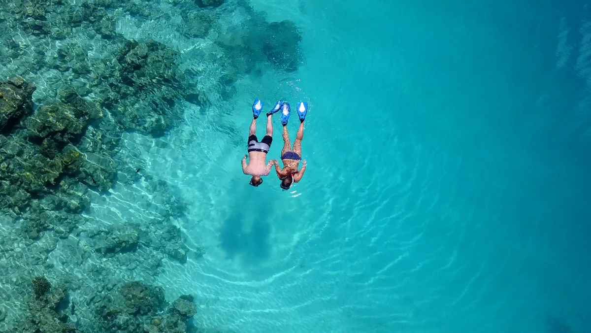

Charter
Das Meer, in Ihrem Tempo
Privatcharter ab Hulhumalé Marina. Eine Gesellschaft an Bord, eine dreiköpfige Crew und eine Route, die am Morgen der Fahrt gezeichnet wird.


Darunter
Und dann öffnet sich das Wasser
Riffe, Kanäle und was an jenem Morgen gerade hindurchzieht.
Unsere Schiffe
Tiffany Blanc 14
Unser Flaggschiff. Vierzehn Meter, 2025 refittet — zwölf an Bord für den Tag, vier schlafen auf dem Wasser.

14,2mLänge
12Gäste
2Kabinen
3Crew